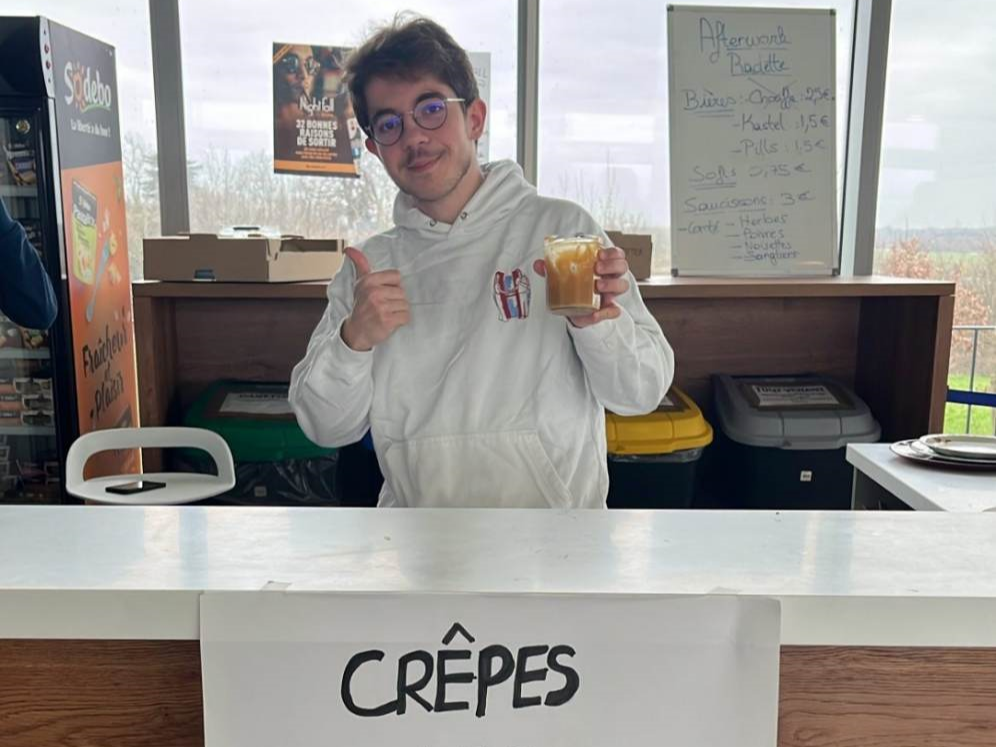
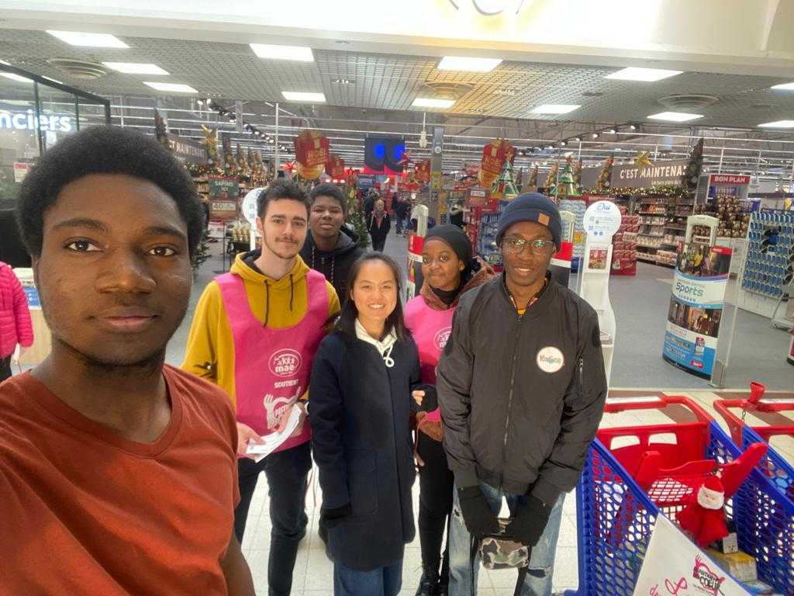
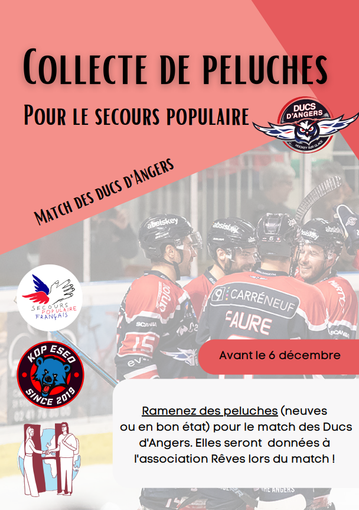
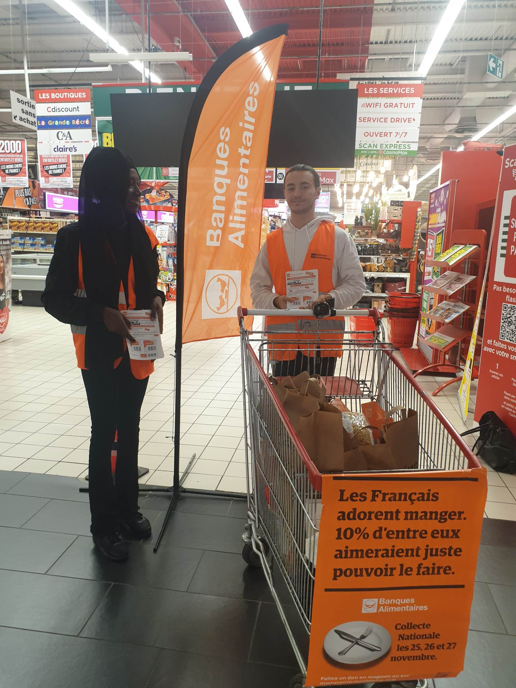
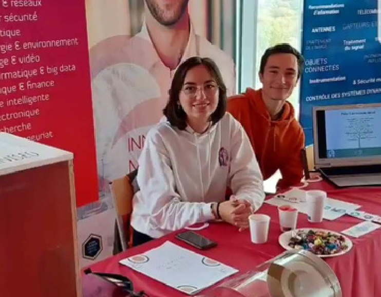
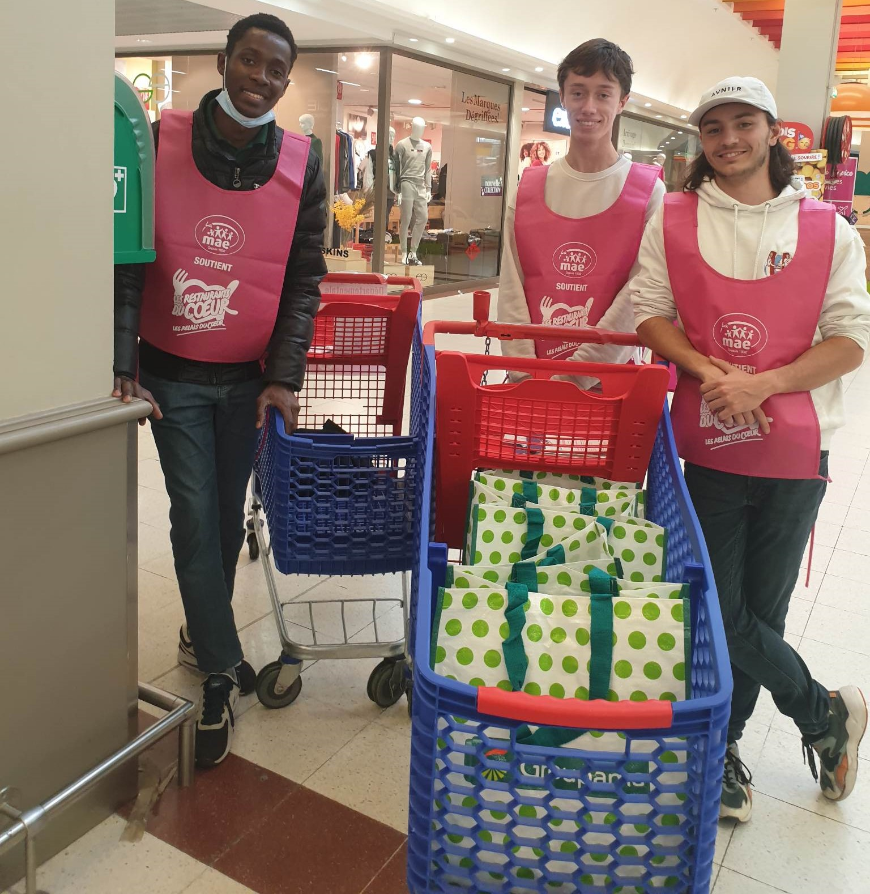

La Chandeleur
1 février 2023

Depuis l'année dernière, Humaniseo réalise des ventes de crêpes lors de la chandeleur dans le but de récolter des fonds pour une association.
Cette année c'est pour l'association Carl que les bénévoles du clubs se sont mobilisés. L'association lutte contre les violences intrafamiliales
et l'inceste en accompagnant les victimes et en faisant de la sensibilisation.
Nous avons réussi à récolter une somme totale de 129,25€ !
Les chocolats de Noël
Décembre 2022
Comme chaque année, Humaniseo vend des chocolats de Noël au profit d’un évenement caritatif. Nous vous proposons plusieurs sortes de chocolats et
coffrets entièrement faits main.
Les bénéfices de cette vente serviront à organiser la Course aux Rêves, un évènement se déroulant en mai qui permettra de récolter des fonds pour
l’association Rêves.
Cette année Humaniseo s’est engagé dans une démarche éco-responsable avec des produits de qualités, locaux et artisanaux. Nous avons donc décidé de
travailler avec un artisan chocolatier qui se trouve à Saint-Sylvain-d’Anjou.
Les lettres aux Ehpads
Décembre 2022
Les lettres aux Ehpads est un projet qui consiste à écrire des lettres à des résidents d’Ehpads afin de leur souhaiter de bonnes fêtes de fin d’année
et de leur envoyer un peu d’amour et de soutien pour ces fêtes qui sont parfois difficiles pour ceux qui les passent seuls.
Cette année nous avons écrit des lettres pour l’Ehpad : Maison de retraite Ma maison, dirigé par Les Petites Soeurs des Pauvres.
Nous avons mis en place une “boite aux lettres” disponible dans le hall de l’ESEO en libre accès afin que chacun dépose sa lettre. Nous avons aussi
réalisé une activité un lundi et mardi midi afin d’écrire des lettres tous ensemble !
La collecte des Restos Bébés du Cœur
10 décembre 2022

Nous avons également participé à la collecte des Bébés du coeurs. Les dons récoltés sont destinés à répondre aux besoins essentiels des bébés pour les
familles en grande difficulté.
La collecte de peluches
Novembre 2022

Cet hiver, Humaniseo s'est allié à la KOP, club supporter de l'ESEO, afin de récolter des peluches.
Ces peluches ont été lancées sur la patinoire d'Angers lors d'un match des Ducs d'Angers (équipe de hockey sur glace). Elles ont finalement été données
à l'association Rêves avec laquelle nous travaillons déjà pour notre course caritative de fin d'année : La Course aux Rêves. Cette association a pour but de
réaliser le rêves d'enfant malades.
La collecte de la Banque Alimentaire
26 novembre 2022

Le 25 et 26 novembre 2022, plusieurs bénévoles de Humaniseo sont allés aider l'association La Banque Alimentaire pour ses récoltes au Géant Casino d'Angers.
Le principe ? Les bénévoles devaient distribuer des tracts et expliquer aux clients du magasin ce qu'est la Banque Alimentaire. Les tracts contenaient des
coupons avec un certain montant que les clients pouvaient scanner à la caisse. Ce montant était ensuite directement versé à l'association.
Que fait la Banque Alimentaire ? L'association récolte de la nourriture destinée à être gaspillée afin de la redistribuer à des personnes en situation de
précarité.
La Fête de la Science
15 octobre 2022

Humaniseo était présent lors de la fête de la science 2022 organisée à l'ESEO sur le thème du développement durable.
Après l'ouverture en début d'année scolaire du pôle environnement au sein du club, les membres présents ont pu présenter aux visiteurs les actions prévues
par Humaniseo comme par exemple la vente de paniers de légumes aux étudiants ou l'organisation d'une cleanwalk.
La collecte des Restos du Cœur
15 octobre 2022

Chaque année Humaniseo participe aux collectes alimentaires des Restos du Coeur.
Une collecte ça consiste en quoi? Le principe est tout simple, le bénévoles Humaniseo remettent aux clients du magasin des flyers avec des propositions de
dons. Ces dons permettent aux personnes en grande précarité de pouvoir manger et de recevoir des produits d’hygiène.
Les Virades du Lac de Maine
25 septembre 2022
Le dimanche 25 septembre 2022 s’est tenu la Virade du Lac de Maine organisée par l’association Vaincre la Mucoviscidose. Cet événement caritatif proposait
plusieurs courses, diverses activités et un service de restauration.
La Vie Associative de l’ESEO a su rayonner à travers ses 30 étudiants de 7 clubs et associations qui se sont mobilisés pour organiser, installer, animer
des activités, faire le service et désinstaller. Les activités ont généré 3654 tickets, dont 606 par les étudiants de l’ESEO (chaque ticket ayant une valeur
de 2 €, soit 1 200 €), et la restauration a généré 3157 tickets.
En ajoutant les dons et les mécènes, la Virade 2022 arrive à 60 000 € récoltés pour financer la lutte contre la mucoviscidose. Merci à tous les bénévoles !